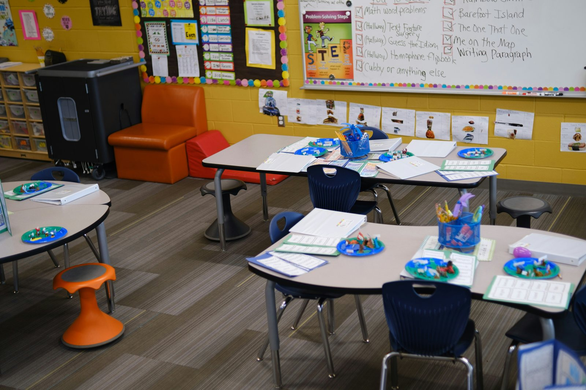
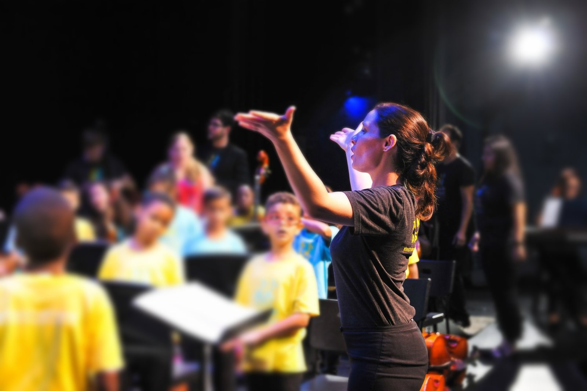
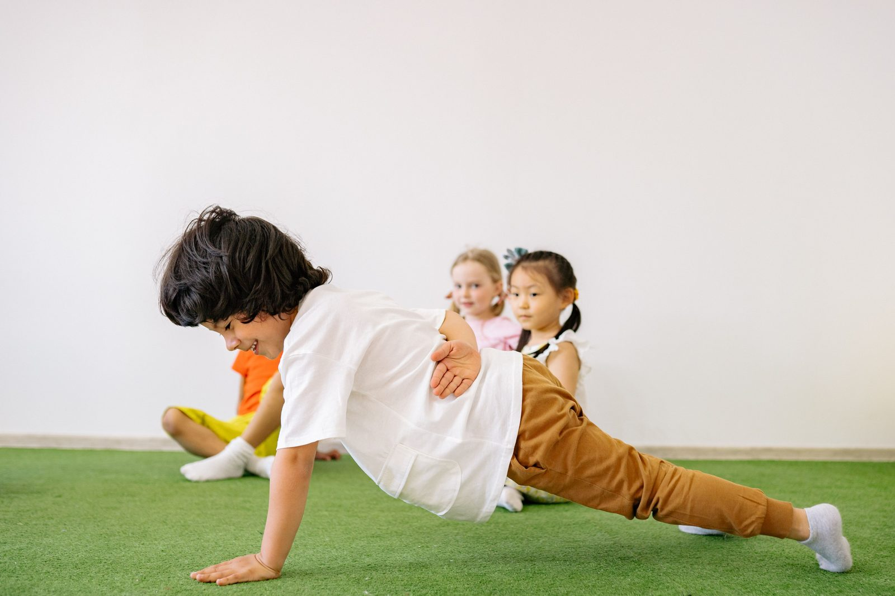
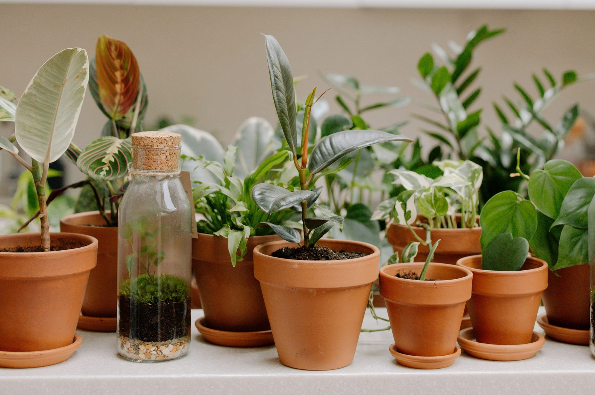
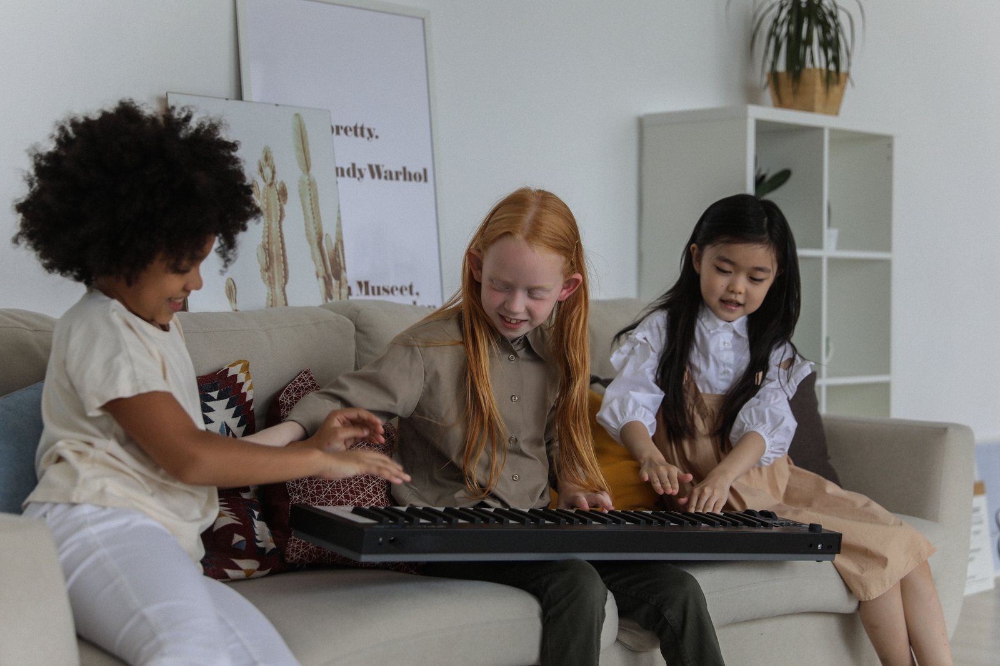
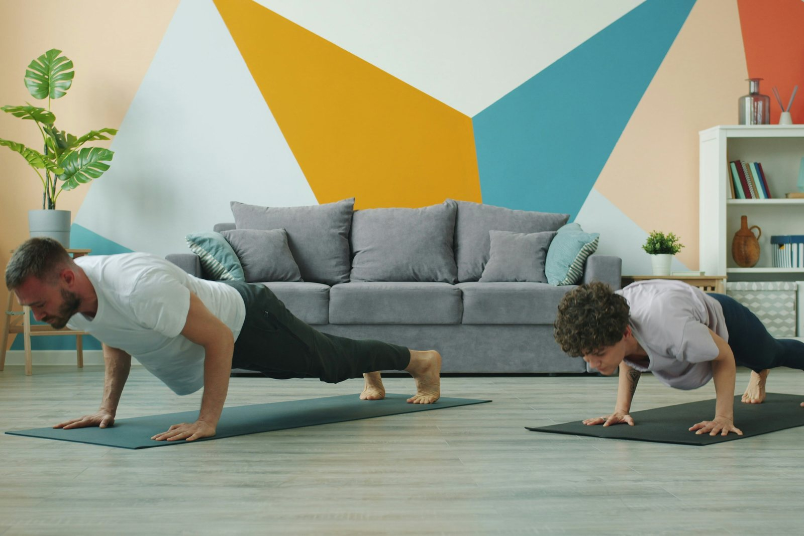

in Miami, FL
Music, Movement and Learning
for Ages 2 Through 5th Grade
Harmony and Health Microschool is a music, movement and learning center in Miami, FL. Our classes and homeschool co-op run from age two through fifth grade, taught by a Florida certified teacher and a professional wellness coach. One-to-one lessons, tutoring and coaching sit alongside them, for students who want to go further.
Music
Classes
Co-Op
Our Classes
Every class is small, hands-on, and led by an educator who actually specializes in it. Take a single class or fill the whole week, and mix them however suits your family.

Ages 5 to 11
Homeschool Co-Op
Monday to Friday, 11:00 AM – 2:00 PM · Kindergarten to 5th grade
Three hours a day of structured, in-person learning for homeschooled children, on whichever days suit your family. Children work alongside peers with our educators guiding them, combining academics with music, movement and time outdoors. It gives a homeschool week the one thing that is hardest to create at home: other children.

Ages 5 to 11
Harmony Choir
Wednesday, 4:00 – 5:00 PM
A dedicated choir directed by a Florida certified K–12 music teacher and choir conductor. Singers build healthy vocal technique, learn to hold their own part in two and three-part harmony, read music, and prepare repertoire for performance. Open both to experienced singers and to children who simply love to sing.
Performs in the end-of-semester recital
Ages 5 to 11
Music Ensemble
Monday, 4:00 – 5:00 PM
Children make music together from the very first class, using their voices, body percussion, xylophones, drums and recorders. Following the Orff approach, they learn by playing rather than by drilling: a rhythm becomes a game, the game becomes a song, and the song becomes a piece the whole group performs. Steady beat, pitch, notation and the discipline of listening to the person beside you all arrive along the way.
Performs in the end-of-semester recital
Ages 5 to 11
Arts & Crafts
Monday & Wednesday, 5:00 – 6:00 PM
An hour to make something with their hands. Children work with paint, clay, paper, fabric and found materials, picking up real technique alongside the patience that comes from starting something and seeing it through to the end. Projects change through the year, and children take their work home.
Shown in the end-of-semester gallery
Ages 5 to 11
Group Movement
Tuesday & Thursday, 4:00 – 5:00 PM
Physical activity children actually look forward to, led by a NASM-trained coach: games, obstacle courses, relays, balance and coordination work. The aim is capability rather than competition, helping every child move well, trust their own body, and finish the hour wanting to come back.

Ages 5 to 11
Gardening
Tuesday & Thursday, 5:00 – 6:00 PM
Children plant, water, tend and harvest in our indoor garden, and discover where food actually comes from. It is science they can hold in their hands: seed and soil, light and water, patience and results. Growing indoors means a crop never depends on the weather, so every child sees their own plant through from first shoot to harvest. What the garden produces goes into tasting sessions, and eating well becomes something children talk about because they grew it themselves.
Shown in the end-of-semester gallery
Ages 5 to 11
Guided Jam & Improv
Friday, 4:00 – 5:00 PM
A relaxed end to the week where children play, improvise and create together without sheet music in front of them. They take turns leading, answer one another in rhythm, and build short pieces on the spot. Improvising teaches children to make musical decisions in real time, and it is the fastest way we know to loosen up a shy player.
Ages 5 to 11
Logic Lab
Friday, 5:00 – 6:00 PM
Puzzles, patterns, strategy games and hands-on problems that ask children to think a step ahead. Logic Lab builds the reasoning underneath both mathematics and reading comprehension, and never once looks like a worksheet. Children work in pairs and small teams, so explaining your thinking is part of the fun.
Ages 2 to 5
Mommy & Me Music
Tuesday, 9:00 – 9:45 AM · with a grown-up
A first taste of music for our youngest visitors, directed by a Florida certified music teacher, with a parent or caregiver taking part alongside them rather than watching from a chair. Forty-five minutes of songs, rhymes, simple percussion, movement and play, built around what a two to five-year-old can genuinely do. No musical experience needed, from either of you.
The group classes above are the heart of what we do. These three sit alongside them: extra help for a young musician getting ready to perform, reading and math support for a child who needs it, and nutrition and fitness coaching for families who catch the bug once they are already here.
Any Age
Private Music Lessons
Weekly, one to one · 30 or 60 minutes
Most of our lesson students are already singing in the choir or playing in the ensemble and want extra help to perform at their best, though lessons are open to anyone. Voice is taught from beginning through advanced, and piano, violin, viola, cello, flute, recorder and xylophone from beginning through intermediate, so a lesson follows skill level rather than age and the pace is set by the person learning.
Solo recital spot in the end-of-semester showcaseAges 5 to 11
Tutoring
Weekly, one to one · 30 or 60 minutes
One-to-one reading and math support for children in Kindergarten through 5th grade. We start by finding where the gap actually is rather than assuming, then work through it at a pace that rebuilds confidence alongside competence. Sessions are weekly, so progress compounds instead of restarting each time, and tutoring is priced exactly the same as a private lesson.

Any Age
Nutrition and Fitness Coaching
Weekly, one to one or as a family · 30 or 60 minutes
Led by a NASM-trained coach, at any age. Fitness coaching is built around what someone actually wants to be able to do, rather than around a generic program. Nutrition coaching works the same way, except that with younger children it usually makes more sense to work with the whole family: a child who cannot yet shop or cook is not the one deciding what is for dinner. Most families arrive here after Group Movement gets them thinking about the rest of the week.
Pricing is built around weekly hours, so the more classes your child takes, the less each one costs.
See the Schedule and Pricing